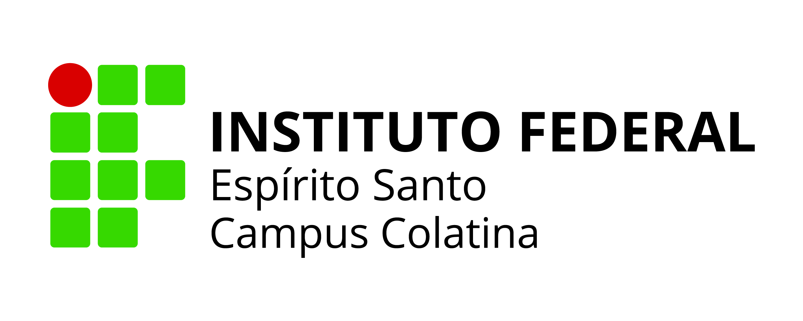

Acesso ao sistema
Acesse https://sigpesq.ifes.edu.br/.
Faça login ou realize cadastro na plataforma.

Instituto Federal do Espírito Santo - Campus ColatinaServidores do Ifes
PICTI - Programa Institucional de Iniciação Científica, Desenvolvimento Tecnológico e Inovação do Ifes
O Programa Institucional de Iniciação Científica, Desenvolvimento Tecnológico e Inovação - PICTI tem como objetivo incentivar atividades de pesquisa científica, desenvolvimento tecnológico e inovação, envolvendo estudantes e servidores do Ifes.
O programa contempla modalidades com bolsa e voluntariado para estudantes do ensino técnico e da graduação.
As modalidades diferenciam o tipo de participação do estudante, o nível de ensino atendido, o foco do plano de trabalho e a existência de bolsa ou vínculo voluntário.
| Modalidade | Tipo de participação | Tipo de aluno | Foco | Recebe bolsa? |
|---|---|---|---|---|
| PIBIC | Iniciação Científica | Graduação | Pesquisa científica e produção de conhecimento | Sim |
| PIVIC | Iniciação Científica | Graduação | Pesquisa científica | Não, participação voluntária |
| PIBITI | Iniciação Tecnológica | Graduação | Desenvolvimento tecnológico e inovação | Sim |
| PIVITI | Iniciação Tecnológica | Graduação | Desenvolvimento tecnológico e inovação | Não, participação voluntária |
| PIBIC-Jr | Iniciação Científica Júnior | Ensino técnico | Pesquisa científica | Sim |
| PIVIC-Jr | Iniciação Científica Júnior | Ensino técnico | Pesquisa científica | Não, participação voluntária |
Atenção: para propostas PIBITI/PIVITI, o edital pode exigir comprovação de parceria com empresa ou organização.
O proponente deve atender aos requisitos institucionais e aos critérios definidos no edital vigente.
Antes da submissão no SIGPESq, recomenda-se organizar documentos, prazos e requisitos do edital.
A submissão no PICTI ocorre em duas etapas principais.
| Etapa | Objetivo |
|---|---|
| Passo 1 | Cadastro do projeto de pesquisa no SIGPESq |
| Passo 2 | Inscrição do projeto no edital PICTI |
Acesse https://sigpesq.ifes.edu.br/.
Faça login ou realize cadastro na plataforma.
Menu lateral: Início -> Meus Projetos
Depois clique em Novo.
O proponente deve participar de grupo de pesquisa certificado.
Caso exista financiamento externo, recurso institucional ou apoio financeiro, as informações devem ser inseridas no sistema.
Na seção Planos de Trabalho, cadastrar cada plano separadamente, com título, descrição e área do conhecimento.
Cada plano será posteriormente vinculado a um estudante bolsista ou voluntário.
Incluir membros do projeto, tipo de participação e período de atuação. Todos devem possuir cadastro no SIGPESq.
Importante: os estudantes não são incluídos nesta etapa. A inclusão ocorre após seleção dos estudantes e publicação de edital específico.
A seção Orientação somente deve ser preenchida após seleção dos estudantes e inclusão dos alunos no projeto.
Após finalizar, clicar em Salvar. O projeto poderá ser editado posteriormente.
Com o cadastro finalizado, clicar em Solicitar Aprovação.
Após cadastrar o projeto no SIGPESq, é necessário realizar a inscrição no edital PICTI.
Menu lateral: Institucional -> Editais
Selecionar Detalhes do edital desejado.
Clique em Nova Inscrição.
Cada inscrição é vinculada a um plano de trabalho. Um projeto com 4 planos exige 4 inscrições separadas.
Selecionar o plano de trabalho que será inscrito no edital.
Responder todos os formulários obrigatórios. Normalmente envolvem requisitos do edital, modalidade do programa, alteração de temporalidade e pontuação do Currículo Lattes.
Preencher a tabela de pontuação do currículo, considerando o período definido no edital e os critérios oficiais de avaliação.
Após responder os formulários, anexar novamente o projeto completo na inscrição do edital.
Após concluir todas as etapas, clicar em Salvar.
Menu: Início -> Edital -> Minhas Inscrições
A classificação das propostas normalmente considera currículo, projeto de pesquisa e plano de trabalho. A avaliação é conduzida conforme o edital vigente e pode envolver a PRPPG, a Direção/Coordenadoria/Setor de Pesquisa, o Comitê de Apoio à Pesquisa do Ifes, o CICTI e pareceristas ad hoc, quando previsto.
Importante: os critérios, pesos, documentação exigida e etapas de recurso devem ser sempre conferidos no edital vigente.
| Critério | Tipo de avaliação | Pontuação máxima |
|---|---|---|
| Currículo Lattes do orientador | Classificatória | 60 pontos |
| Projeto de pesquisa + plano de trabalho | Eliminatória e classificatória | 40 pontos |
A avaliação considera exclusivamente o Currículo Lattes anexado corretamente no SIGPESq.
Após a avaliação, o servidor deve acompanhar as publicações oficiais do edital. O resultado preliminar permite conferência da pontuação e, quando cabível, apresentação de recurso dentro do prazo definido. Somente após a análise dos recursos é divulgada a classificação final, que orienta a distribuição das bolsas disponíveis.
Após a aprovação das propostas, normalmente é publicado edital específico para seleção de estudantes. A PRPPG do Ifes, por meio da Diretoria de Pesquisa, publica edital de seleção para estudantes do ensino médio, ensino técnico e graduação.
Essa seleção define quais estudantes serão vinculados aos planos de trabalho aprovados, seja como bolsistas, voluntários ou integrantes de cadastro de reserva. A modalidade de vínculo deve seguir o tipo de plano aprovado e os critérios definidos no edital de seleção.
Após a seleção, o estudante é vinculado ao plano de trabalho, ocorre a implementação da bolsa ou voluntariado e são realizados os aceites no SIGPESq.
Nos casos de bolsas Fapes, estudante e orientador também deverão acompanhar procedimentos no SigFapes.
Atenção: o envio do relatório final no SIGPESq não substitui as obrigações do SigFapes. Quando houver bolsa Fapes, os dois sistemas devem ser acompanhados e os prazos do edital e da Fapes devem ser observados.
Orientação de estudantes na execução de planos de trabalho vinculados a projetos de pesquisa em programas institucionais como projetos de iniciação científica (editais PICTI) poderão ter carga horária definida conforme Resolução vigente do Conselho Superior, não necessitando da abertura de processo eletrônico e devendo ser registrado em seu plano individual de trabalho (PIT).
A certificação depende do encerramento regular das obrigações do projeto.
| Tema | Ponto importante |
|---|---|
| Coordenação | A coordenação do projeto cabe a um único servidor efetivo. |
| Equipe | Pode ter coordenador, pesquisador/colaborador e colaborador eventual. |
| Estudantes | Podem atuar como bolsistas, voluntários ou intercambistas. |
| Aprovação | A avaliação do projeto envolve a Direção/Coordenadoria/Setor de Pesquisa e pode contar com o Comitê de Apoio à Pesquisa do Ifes, conforme fluxo institucional e edital vigente. |
| Pendências | Deve ser verificada a existência de pendências em projetos anteriores. |
| CEP/CEUA | Quando o projeto envolver seres humanos, animais ou situações que exijam análise ética, o coordenador deve obter aprovação prévia do CEP, Comitê de Ética em Pesquisa, ou da CEUA, Comissão de Ética no Uso de Animais. |
| Relatório final | Necessário para conclusão do projeto. |
| Certificação | Só ocorre após aprovação do relatório final. |
| Cancelado/suspenso | Projetos cancelados ou suspensos não são certificados. |
Bolsas condicionadas à disponibilidade orçamentária e aos critérios do edital vigente.
Projetos vinculados ao PICTI possuem, em regra, duração de 12 meses, conforme edital.